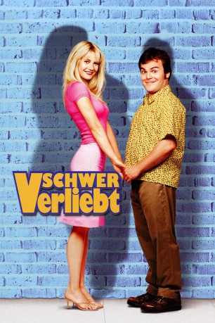
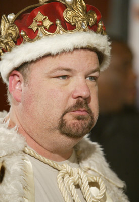

#10800 Schwer verliebt
Alternativ: Shallow Hal (Englischer Titel)
 
 IMDB-Wertung: 5.9 / 10
IMDB-Wertung: 5.9 / 10  Metascore: 48
Metascore: 48 
Als Kind musste Hal seinem sterbenden Vater versprechen, dass er bei Frauen auf perfekte Rundungen, statt auf innere Werte achtet. Kein Wunder, dass der erwachsene Hal nur einem Frauentyp nachsteigt: dem Superweib! Auch wenn er sich unwiderstehlich findet, so ist er (klein, dick, erfolglos) nicht gerade das, was Frauen schwach macht. Als ihm jedoch ein Persönlichkeits-Guru mittels Hypnose zu einer "neuen" Sehweise verhilft, stehen ihm schwergewichtige Veränderungen ins Haus. Hal's neue Traumfrau heißt Rosemary, ist witzig, klug, schön... und sie steht auf ihn! Dank seiner neuen Wahrnehmung bleibt ihm allerdings eine XXL-Winzigkeit verborgen: 300 Pfund Lebendgewicht!
Jahr: 2001
Dauer: 113 Minuten
FSK: 6
Land: USA Studio: Twentieth Century FoxTonspuren: DTS - ,
Untertitel: Deutsch,
Auflösung: 1080p (1920x1040) Größe: 8949 MB
Genre: Drama, Komödie, Fantasy, Liebe
Regisseur:  Bobby Farrelly, Peter Farrelly
Bobby Farrelly, Peter Farrelly
Drehbuch: Sean Moynihan, Peter Farrelly, Bobby Farrelly
Soundtrack: William Goodrum, Ivy
Darsteller:
 Gwyneth Paltrow als Rosemary
Gwyneth Paltrow als Rosemary Jack Black als Hal
Jack Black als Hal Jason Alexander als Mauricio
Jason Alexander als Mauricio Joe Viterelli als Steve Shanahan
Joe Viterelli als Steve Shanahan Bruce McGill als Reverend Larson
Bruce McGill als Reverend Larson- Anthony Robbins als Himself
- Susan Ward als Jill
 Zen Gesner als Ralph
Zen Gesner als Ralph- Brooke Burns als Katrina
 Rob Moran als Second Tiffany
Rob Moran als Second Tiffany-  Kyle Gass als Artie
 Laura Kightlinger als Jen
Laura Kightlinger als Jen Nan Martin als Nurse Tanya Peeler
Nan Martin als Nurse Tanya Peeler- Sasha Neulinger als Young Hal
- Erinn Bartlett als Bella
- Fawn Irish als Spastic Bella
 Daniel Greene als Doctor
Daniel Greene als Doctor Danny Murphy als Cabbie
Danny Murphy als Cabbie- Don Gavin als David Bouley
- Libby Langdon als Waitress
- Brianna Gardner als Cadence
 Jackie Flynn als Fuel Pizza Manager
Jackie Flynn als Fuel Pizza Manager- Sascha Knopf als Gorgeous Tanya
- Mary Wigmore als Cute Tiffany
 Steve Tyler als McIntosh Waiter
Steve Tyler als McIntosh Waiter- Darius Rucker als Capital Grille Maitre D'
- Manon von Gerkan als Lindy
 Bonnie Aarons als Spastic Friend #1
Bonnie Aarons als Spastic Friend #1- Lisa Brounstein als Spastic Friend #2
- Michael Corrente als Homeless Man #2
 Sayed Badreya als Doctor Sayed
Sayed Badreya als Doctor Sayed- A.B. Cassidy als Sick Kid #2
- Maria White als Hospital Intensive Care Unit Staff & Patient
- Kevin Biegel als Night Club Goer #1
- Ryan Biegel als Night Club Goer #1
- Nic Nemeth als Night Club Goer #1
- Alina Puscau als Night Club Goer #1
- Stacy Fuson als Night Club Goer #2
 Nichole Hiltz als Night Club Goer #2
Nichole Hiltz als Night Club Goer #2- Jennifer Sky als Night Club Goer #2
- Marc Levin als Fuel Pizza Patron
- Preston Thomas als Fuel Pizza Patron
- Chris Anderson als McIntosh Patron
- Jimmy Badstibner als Frat Boy #2 (uncredited)
- Rachel Waters Brandt als Party Guest (uncredited)
 Brina als Wachusett Mtn. Skier (uncredited)
Brina als Wachusett Mtn. Skier (uncredited)- Christina R. Copeland als Sorority Girl (uncredited)
- Nelson Diaz als Club Kid (uncredited)
- Kevin Hooks als Restaurant Manager (uncredited)
- Kevin Lapsley als Party Guest (uncredited)
Datei: X:\2001\Schwer verliebt (2001, FSK6, 1920x1040).mkv seit 08.03.2019
Festplatte: Gemischt-01+Anime
 Es gibt insgesamt 102 Filme in der Gruppe '2001'
Es gibt insgesamt 102 Filme in der Gruppe '2001'